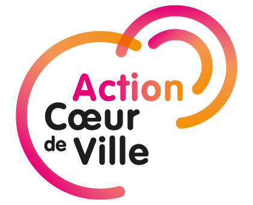

Ville retenue : contrat signé
Ville retenue : contrat non signé
Le plan « Action Cœur de Ville » est un grand plan d’investissement public sur cinq ans (2018-2022) à destination des 222 villes intermédiaires qui structurent le territoire national. Il cible plus spécifiquement leurs centres-villes, qui rayonnent sur de larges bassins de vie.
A des degrés divers, ces territoires sont confrontés à la dévitalisation de leurs centres, à la mesure du déclin démographique, de la dégradation de l’offre d’habitat et de la fuite des activités commerciales en périphérie notamment. « Action Cœur de Ville » apporte une réponse globale et transversale, à partir d’un projet porté par la collectivité, qui doit se construire autour de cinq axes :
1. De la réhabilitation à la restructuration : vers une offre attractive de l’habitat en centre-ville
2. Favoriser un développement économique et commercial équilibré
3. Développer l’accessibilité, la mobilité et les connexions
4. Mettre en valeur les formes urbaines, l’espace public et le patrimoine
5. Fournir l’accès aux équipements, services publics, à l’offre culturelle et de loisirs
« Action Cœur de Ville » va jusqu’au bout de la logique de décentralisation et de déconcentration. Le soutien de l’État et des partenaires nationaux se formalise par la conclusion d’une convention-cadre pluriannuelle avec la commune et son intercommunalité.
Le cadre partenarial permet d’inclure à cette convention tout acteur public ou privé pouvant mettre ses moyens ou son expertise au service du cœur de ville : établissement public foncier, agence d’urbanisme, bailleur social, associations, entreprises…
Les projets sont conçus par les collectivités, qui sollicitent les financements auprès des services déconcentrés de l’Etat et des partenaires, réunis dans un comité de projet présidé par le maire.
Cette méthode «sur-mesure» permet d’accompagner les collectivités à leur rythme, de mettre en œuvre les actions déjà matures lors de la conclusion de la convention et de réaliser en même temps toutes les études nécessaires au projet de revitalisation du centre-ville.
Sources : ANCT • Réalisation : ANCT pôle adt cartographie • Dernière mise à jour : 29 juillet 2020